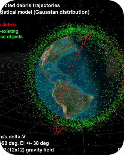

EcoOrbit SpaceGuard
Space debris and satellite collision-risk monitoring.
- Plot satellites and orbital debris on a 3D Earth globe.
- Show orbital information and available conjunction-risk data.
- Display risk levels and explain why an encounter needs attention.
- Add a historical space-debris dashboard.
Categories: Earth Orbit, Manmade Satellites, AI & ML, Data Visualization, Statistics, Software.
Drag to rotate · scroll to zoom · click an object
Close Approaches
Orbital Information
Click any satellite or debris object on the globe to see its orbit.
Why This Encounter Needs Attention
Select a close approach from the list to see the risk level and the reasoning behind it.
Historical Space-Debris Dashboard
Figures are rounded, approximate values for illustration. For exact numbers use the ESA Space Environment Report or NASA's Orbital Debris Quarterly News.
Regularly tracked objects in Earth orbit (approx.)
Major fragmentation events
How to read the data on this page
Made-up satellites, debris and encounters generated in your browser to demonstrate the tool. Collision probabilities are illustrative.
Real public orbital elements (TLEs) from CelesTrak, propagated here to find close passes. TLEs carry no uncertainty data, so no collision probability is given and errors of kilometres are possible.
Conjunction Data Messages with covariance come from operators and services such as the US Space Force (Space-Track) or EU SST. Not included here. Connect an authorised feed to show them.